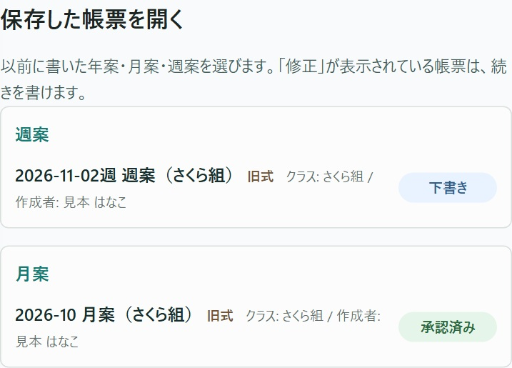
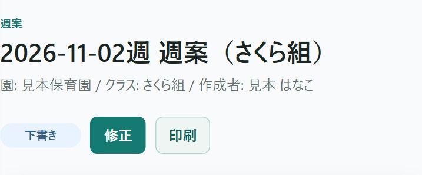
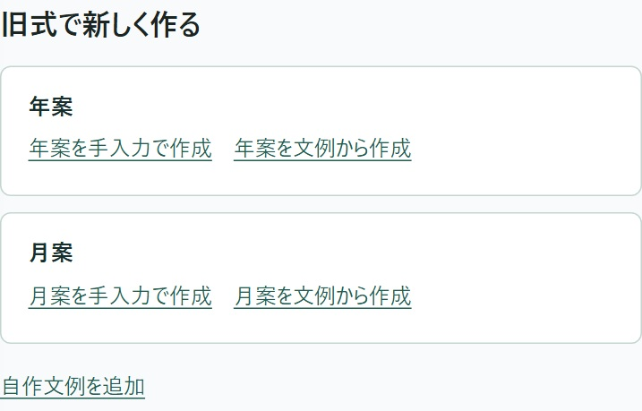

「保存した帳票を開く」から、日付とクラスが合う行を押します。見本では11月2日の週の週案を開きます。
数が多いときは、帳票一覧の「様式」で「旧式」を選ぶと、クラスや状態も指定できます。
帳票一覧で絞る手順へ前に使っていた様式で書いた帳票は、「指導計画」→「旧式の帳票」から開けます。

「保存した帳票を開く」から、日付とクラスが合う行を押します。見本では11月2日の週の週案を開きます。
数が多いときは、帳票一覧の「様式」で「旧式」を選ぶと、クラスや状態も指定できます。
帳票一覧で絞る手順へ
開いた帳票に「修正」があれば、押して続きを書けます。日付とクラスを確かめてから書き始めてください。

普段の計画は、「指導計画」の「自園の帳票」から始めます。旧式で新しく年案や月案を作るときは、この画面の「旧式で新しく作る」へ進みます。
たとえば月案を自分で書くなら「月案を手入力で作成」、文例を使って始めるなら「月案を文例から作成」を押します。この欄は、帳票を書ける職員に表示されます。